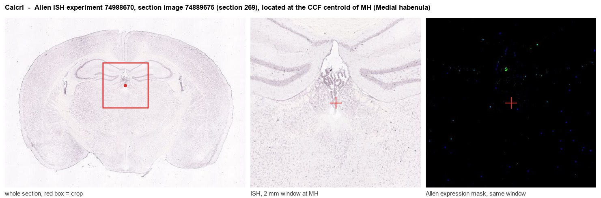
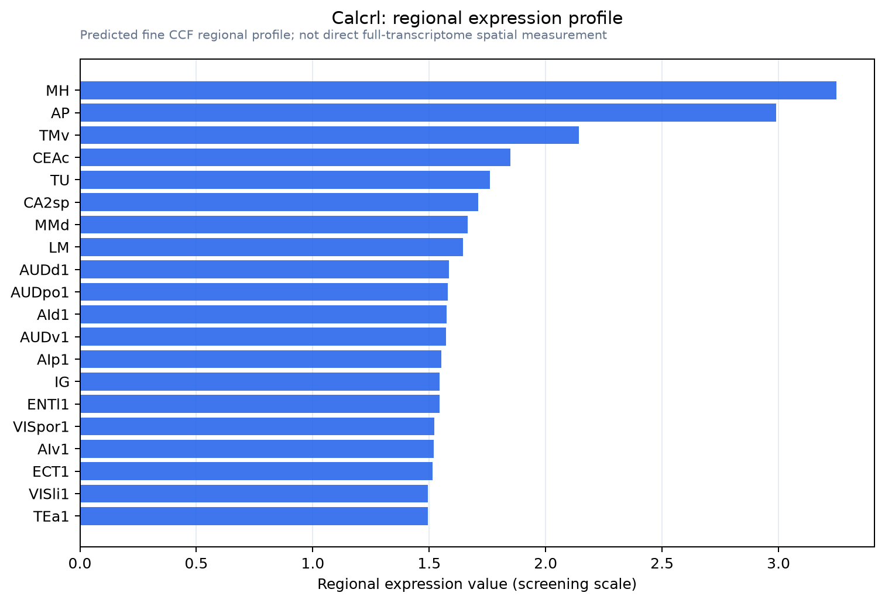

Calcrl
Calcitonin gene-related peptide type 1 receptor (CGRP type 1 receptor) (Calcitonin receptor-like receptor)
Spatial tier: REGION_BIASED · Class: GPCR · Top region: MH (Medial habenula) · Positive regions: 48/554
44.2Discovery Score
40.3Targetability Score
CEvidence grade C
What this means: Calcrl: fine CCF profile is region-biased toward MH (top regions: MH, AP, TMv, CEAc, TU); this is a discovery lead, not direct proof.
Function in MH: evidence, prediction, innovation
- Gene function
- Calcrl encodes the calcitonin receptor-like receptor, a class B (secretin-family) G protein-coupled receptor. Its ligand selectivity is set by which receptor activity-modifying protein it partners: CALCRL+RAMP1 is the CGRP receptor, CALCRL+RAMP2/3 is the adrenomedullin receptor. Both couple mainly to Gs and raise cAMP, driving vasodilation, lymphatic development and migraine pain signalling in the periphery.
- Region function
- The medial habenula is an epithalamic nucleus whose cholinergic (ChAT/Slc17a6) and substance P (Tac1) neurons project almost exclusively through the fasciculus retroflexus to the interpeduncular nucleus. This pathway controls nicotine aversion and withdrawal, anxiety, fear and aversive-memory expression.
- Published in this region
- inferred No region-specific literature found. The closest evidence is Skofitsch and Jacobowitz 1985, who mapped 125I-CGRP binding sites across rat brain and reported dense labelling over the habenular nuclei, implying a functional CGRP/CALCRL-RAMP receptor there; however Allen ISH detects essentially no Calcrl mRNA in MH (expression energy 0.08-0.26, at the grey-matter noise floor), so any such receptor may sit on habenular vasculature or afferent terminals rather than on MHb neurons.
- Predicted function
- Prediction: if CALCRL is present on MHb neurons or their afferents, CGRP or adrenomedullin acting through Gs-cAMP-PKA would slowly raise MHb excitability and boost transmitter release onto the interpeduncular nucleus, adding a threat-related neuromodulatory input on top of cholinergic drive. Intra-MHb CGRP should then be anxiogenic and enhance nicotine-withdrawal aversion, while a gepant antagonist (olcegepant) or MHb-restricted Calcrl deletion should reduce it. Given the trace mRNA signal, a negative result is equally plausible and RNAscope for Calcrl/Ramp1 should be the first test.
- Innovation
- ★★★★☆ 4/5 No one has examined CGRP or adrenomedullin receptor signalling in the medial habenula and clinically approved CGRP-receptor drugs make it immediately translatable, but the weak mRNA signal lowers the odds of a positive result.
- Tools
- Calcrl floxed mice; CGRP-receptor antagonists olcegepant (BIBN4096BS) and rimegepant; peptide antagonists CGRP(8-37) and AM(22-52); Ramp1 and Ramp2 knockout mice; CALCRL and RAMP1 antibodies; Calca/CGRP-Cre lines for the ligand side.
- References
Direct evidence located at the region

Allen ISH experiment 74988670, section image 74889675 (section 269): the section that contains the CCF centroid of Medial habenula according to the Allen image-to-atlas alignment (reference_to_image), with a 2 mm window around that point. Left: whole section, red box = window. Middle: ISH signal. Right: Allen's expression-mask view of the same window. open this image in the Allen viewer
Look it up yourself: Allen Mouse Brain ISH for CalcrlAllen reference atlas: MH (structure 483)ABC Atlas MERFISH viewer(in the ABC Atlas choose dataset MERFISH-C57BL6J-638850-CCF, colour cells by gene "Calcrl" or by parcellation_substructure "MH")All genes confined to MH + 3-D brain
Direct spatial evidence
MERFISH REGION LOCATOR

Regional expression figure

Predicted WMB × fine-CCF profile; not direct full-transcriptome spatial measurement.
Spatial profile
Evidence and specificity
- Evidence status
- PREDICTED_FINE
- Direct sources
- None; predicted localization only
- Exclusive threshold
- 12 positive regions out of 554
- Spatial specificity
- 0.293
- Top-region fraction
- 0.051
- Filter status
- PASS
Interpretation limits
- Cell-type-to-region projection is imputed expression, not direct spatial measurement.
- Adult reference atlases do not establish stability across age, sex, strain, state, or disease.
- Transcript abundance does not guarantee protein abundance or genetic-tool performance.